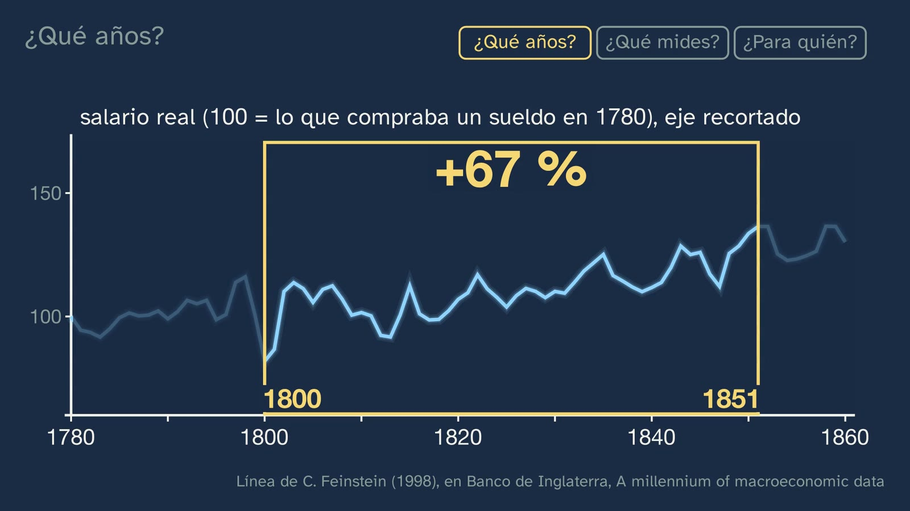
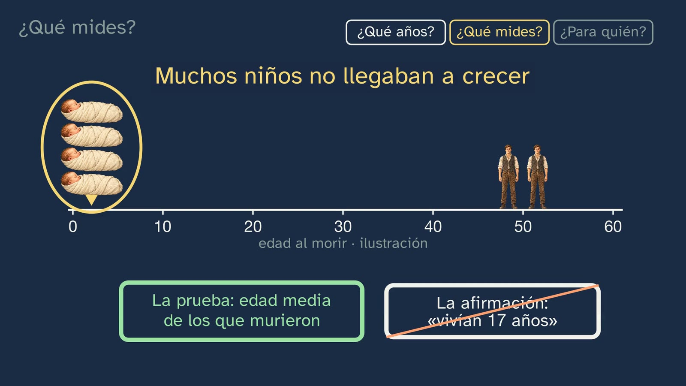
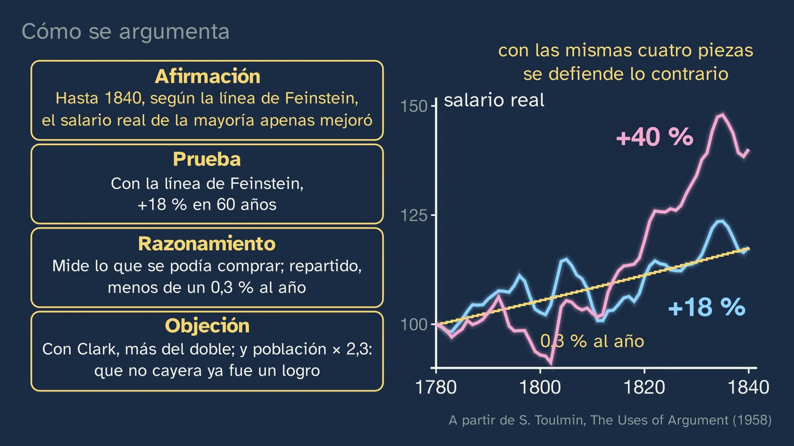

Were workers better off? Two accounts
In a nutshell
Two more tools of the craft: understanding why historians disagree and learning to argue. The case is the longest debate in economic history: were the workers of the British Industrial Revolution better off? Ure (1835) and Engels (1845) tell Manchester's story the opposite way round; Hobsbawm (1957) and Hartwell (1961) clash in the same journal. One says that living standards were rising; the other, that there was no proof. Is one of them lying?
The class shows where an honest disagreement comes from, with three questions that work for any piece of data. Which years? A window moves over Feinstein's real line: without touching a single figure, the real wage falls by 3% or rises by 67%. The pit of 1800–1801 explains it, and with five-year averages it almost disappears; what's left is where the count is closed. What are you measuring? Two wage lines, height, the hours drawn out of the Old Bailey witnesses and Chadwick's average age at death: the figure is true, but «they lived to 17» is false. For whom? The average hides the labourers, the weavers, the girls and the family. After that, how the debate moves forward, the two typical mistakes, a four-piece argument and a present-day use of history: the comparison with artificial intelligence.
Objective. By the end, students will be able to explain why historians disagree without making things up (which years they look at, what they measure and who they're talking about), tell a claim from its evidence, and argue a historical position with data.
A note on the answer. The class separates what almost all the estimates agree on (for decades the real wage rose little; after that, clearly; some groups did much worse) from what is still disputed (how much, when, for whom and what it means). It doesn't split the difference, and it doesn't give a verdict: the judgement («was it worth it?») is left to the students, with reasons.
A note on neutrality. Hobsbawm was a Marxist and stayed in the Communist Party of Great Britain until its dissolution; Hartwell was a classical liberal and presided over the Mont Pelerin Society. The class says so of both and adds: that doesn't tell you who's right; it tells you what to check. Their inks on the board (lilac and turquoise) mean nothing more: green and orange, which in this topic mean «holds up» and «no evidence», aren't shared out between them.

For readers outside Spain: the Bachillerato is the last two years of secondary school (ages 16–18). Contemporary World History is an elective in the first year of the Humanities and Social Sciences track. The video is in Spanish, with English subtitles; the images on this sheet come from the video and keep their Spanish text. The translations of Spanish and German documents (the decree, Cerdà, Engels) are our own; English documents are quoted in the original.
Curriculum
Spain's Royal Decree 243/2022, Contemporary World History, an elective in the first year of the Bachillerato in Humanities and Social Sciences (consolidated text in the Official State Gazette, BOE, checked on 02/11/2026). Our translation of the official Spanish text. The introduction asks for «the precise use of the concepts and framework of historiography» and «reflective knowledge of the main academic theories and currents»; competence 7, «an approach to historiography and to the debates on key topics of history».
| Element | What the decree says | Where the class works on it |
|---|---|---|
| Core knowledge (block A) | «The historian's work: historical sources, historiography and narratives of the past. Historical argument. […]» | The whole class: why they disagree, the four pieces of an argument |
| Core knowledge (block A) | «Standards, conditions and ways of life in contemporary societies: groups, social classes and social inequality. […]» | Wage, height, hours, mortality; who is inside each average |
| Core knowledge (block A) | «Rhythms and models of economic growth in the world […]. Factors of economic development and their social, political and environmental implications: from industrialisation to the post-industrial era.» | Output and wages, and the so-called Engels' pause |
| Criterion 3.2 | «To analyse living conditions, the world of work and labour relations and their conflicts […]» | The three questions, applied to the workers |
| Criterion 6.1 | «To assess the historical significance of the idea of progress and its many social consequences […] through the treatment of numerical data, the interpretation of graphs and a multifactorial understanding of the rhythms and cycles of growth […]» | The window on the curve, the averages and the two lines |
| Criterion 7.1 | «To form reasoned opinions, to debate and to transfer ideas and knowledge […] through work on historical and historiographical texts […]» | Hobsbawm, Hartwell, Thompson; the four-piece argument |
| Criterion 7.2 | «To address critically the main key topics of history and of the present through an approach to the main historiographical currents and to the uses made of history […]» | The currents of the debate; the comparison with artificial intelligence as a use of history |
What students need to bring. The four questions for a source (class 1), «coinciding is not causing» (class 2) and, above all, the two questions to ask of the word progress (class 4): by what criterion?, for whom?
Where it comes back. Topic 4 («Industrialisation and class society») brings in the Industrial Revolution as content: why it began in Britain, the population graph, the industrial city and the novel as a source. Here it's a case for learning the craft. Topic 5 picks up the workers who organise.
How the class is built
Video chapters
| Part | What it does | Why |
|---|---|---|
| What you already know | Retrieving the two questions from class 4, and the solutions | They're the centre of today's class |
| Two witnesses, one city | Ure and Engels, with who made it and a real cross-check | The argument is as old as the factory, and both have to be cross-checked |
| Two historians, two titles | The titles with a highlighter, the 1963 fight and the same fish | Nobody's lying: that's where the hook's question comes from |
| Which years? | The live window, the pit of 1800, the averages and where each one closes the count | You see the trick being done on real data |
| What are you measuring? | Two wage lines, height, hours and mortality | Each indicator is questioned with the same questions |
| For whom? | The average that opens up, the weavers, two boys, the girls and the family | What the figure doesn't show |
| How a debate moves forward | Feinstein, Allen, Clark and Crafts; the answer | More data, and corrections in public |
| If they disagree, is one lying? | The two mistakes and three sentences to classify | Fact, interpretation and value judgement |
| How to argue | Claim, evidence, reasoning and objection | A whole example, and the objection that sets the limits |
| A use of history | The sentence about AI, with the three questions | Criterion 7.2: bringing in the past to talk about the future |

A plan for a 50-minute lesson
| Minutes | What happens |
|---|---|
| 0–4 | No video, the bet on the worksheet: if the wage rises by 18%, what happens to height? Each student writes why. |
| 4–14 | Video up to «Is one of them lying?». Stop: in pairs, three reasons why two historians with evidence can disagree. |
| 14–26 | Video through «Which years?» and «What are you measuring?», up to Chadwick's 17. Stop and discuss the question before going on. |
| 26–34 | Video through «For whom?» and «How a debate moves forward». Fill in the table on the worksheet. |
| 34–46 | The activity: «Three teams, one table» (below). |
| 46–50 | Video to the end, with the open question. The exercises, for homework. |
Typical mistakes and how they are handled
| Mistake | What the research says | How the class handles it |
|---|---|---|
| «If two historians disagree, one is lying» | Only around 20% of the older students in the CHATA project understood that two accounts differ because they «answer different questions» (Lee, 2005, pp. 38–39) | The three questions; the same fish; the window |
| «So it's all opinion» | It's the mirror-image mistake: anyone who concludes that only biased accounts are left is «almost back to square one» (Lee, 2005, p. 37) | Evidence rules things out: «they lived to 17» doesn't hold up. Fact, interpretation and value judgement are argued in different ways |
| Confusing average age at death with how long people lived | Common in popular history («life expectancies of 25 and 22», BlueJay, 3:41). William Farr already pointed it out in his day (Hanley, 2002) | An invented example, with six people, and the real life expectancy figure |
| Only the misery, or only the progress | The most-watched videos tell a single story (WIRED: «the pay decreased and the hours increased»; Academia Play, in Spanish: «the average wage doubled») | The class shows the best version of each position, with its concessions |
| A novel or an appalling case as the measure of everything | Dickens is taken as data in many videos (Absolute History, 6:06) | Students learn to ask who made it and what for. The novel as a source comes in topic 4 |
| «Sixteen hours a day, for everyone» | Voth: the ordinary working day was around 10.5 or 11 hours; what grows is work over the year | Hours are measured through witnesses, with their margin and their limits |
Questions and solutions
Stop and think (in the video)
- Is one of them lying? No. Both have evidence, and they agree on more than it seems: see «Which years?» and Hartwell's sentence, «the game of quoting isolated statistics, in view of the contrary evidence that Dr. Hobsbawm and I are able to produce, seems less fruitful» (1963, Open University reprint, p. 58).
- The bet: the wage of their childhood years rises by 18%. What happened to height? According to the Baten and Blum series, it fell, from 169.1 to 165.6 cm between those born around 1820 and around 1850. But the fall depends on the window (from 1790, only −0.4 cm) and on the sample (Bodenhorn, Guinnane and Mroz, 2017). What counts is a reasoned bet, not getting it right.
- Did a Manchester worker live to 17? No. It's the average age of those who died, with their families: the children drag the figure down. The report itself warns about the emigration of young people from Rutland (p. 157).
- Fact, interpretation or value judgement. 1) Fact: it's in the sources (Wood, 1910, table 41). 2) Interpretation: the power loom finished off the trade, but the biggest nominal collapse (1814–1818) comes when only between 1% and 10% of the cloth was woven by machine; there are other causes (the end of the war, easy entry into the trade, the crises). 3) Value judgement: no piece of data settles it, and it's argued with reasons.
Practice (the solutions open class 6)
- Barcelona (Cerdà). The distance between classes, huge in the first pair (36.47 against 23.55 years, average of men and women, 1837–47), almost disappears from the age of six (50.13 against 47.55, 1845–47): what most separated rich and poor was the death of children. It's the same trap as Chadwick's: the method isn't recorded, but it behaves like an average age at death. And they're two different periods, so the comparison is only a guide. With men alone the distance is even greater (38.83 and 19.68), and among women, smaller (34.11 and 27.43): that's why the class uses the averages.
- An argument with four pieces. Open. An example in favour. Claim: in the long run, industrialisation improved the lives of the majority. Evidence: from 1840 to 1900, output per worker +90% and real wage +123% (Allen, 2009). Reasoning: the real wage measures what could be bought, and the rise reached most wage earners. Objection: that long run came too late for those who lived through it; the wage doesn't measure hours or health. What counts is that the objection really is the best one, and that students say how far their claim goes.
- Old Bailey Online. About 740 accounts contain «going to work», and only some of them give the time nearby: you have to open several. What they don't say: whether they're representative (only those who were witnesses, in London and mostly men), whether the time is exact or rounded, and whether they kept those hours every day.
Open question. Can you measure whether one life is better than another? It has no solution. What counts is that students tell what can be counted from what is lived. Two opposing authors agree on the limit: Thompson («statistical averages and human experiences […] run in opposite directions») and Hartwell («increasing life expectation and increasing consumption are no measures of ultimate well-being», 1961, p. 413).

A classroom activity: three teams, one table
Objective. To use the same data to support two conclusions without making anything up, and to find the best objection to your own.
Preparation. Three teams, with the table below. Nothing else is needed.
| Around | Wage, Feinstein | Wage, Clark | Output per worker | Height of those born then (cm) |
|---|---|---|---|---|
| 1780 | 100 | 100 | 100 | 167.5 |
| 1790 | 106 | 103 | 99 | 166.0 |
| 1800 | 103 | 93 | 109 | no data |
| 1810 | 104 | 103 | 112 | 169.7 |
| 1820 | 111 | 119 | 112 | 169.1 |
| 1830 | 114 | 134 | 121 | 166.7 |
| 1840 | 118 | 140 | 136 | 166.5 |
| 1850 | 137 | 169 | 150 | 165.6 |
| 1860 | 138 | 174 | 159 | 166.6 |
Base 100 in 1780, centred five-year averages. Wages and output: Bank of England, A millennium of macroeconomic data (Feinstein, Clark, Broadberry and others). Height: Baten and Blum (2014), men of today's United Kingdom, by decade of birth.
Steps.
- Team A argues that workers were better off. Team B, that they hardly improved. Team C prepares the objections to both.
- Ten minutes: each team writes its argument in four pieces, with the years and the column it chooses, and says why it chooses them.
- Each team reads its own. Team C launches the best objection, and the team rewrites its claim so that it holds up: how far it goes, for whom.
- Close: what has each team said that's false? The answer should be nothing. What's being disputed? Years, series and group. What's missing from the table? Women, children, family, hours.
What counts. That nobody makes anything up, that they say which column and which years they use, and that the objection changes the claim.
Open resources
Checked on 02/11/2026, free and without registration.
| Resource | What it offers | Link |
|---|---|---|
| The Proceedings of the Old Bailey | About 200,000 London trials, from 1674 to 1913, searchable by word, in English. It's the archive Voth worked with | https://www.oldbaileyonline.org/ |
| Bank of England, A millennium of macroeconomic data | Wages, prices, output and employment in the UK since the 13th century, in a spreadsheet | https://www.bankofengland.co.uk/statistics/research-datasets |
| Clio Infra | Average height by country and decade, among other historical indicators, in English | https://clio-infra.eu/Indicators/Height.html |
| Our World in Data, Human Height | Charts of height by country and year of birth, with their data, in English | https://ourworldindata.org/human-height |
| Internet Archive, The Economic History Review | The 1957 and 1961 issues, with Hobsbawm's and Hartwell's articles, open access | https://archive.org/details/economic-history-review_1961_13_3 |
| Project Gutenberg, Chadwick's report | The 1842 Report on the Sanitary Condition, in full, in English | https://www.gutenberg.org/ebooks/65090 |
| Marxists Internet Archive | Engels' The Condition of the Working Class in England, in English | https://www.marxists.org/archive/marx/works/1845/condition-working-class/ |
| Internet Archive, Cerdà | Teoría general de la urbanización (1867), vol. II, with the Monografía estadística de la clase obrera de Barcelona (a statistical study of Barcelona's working class), in Spanish | https://archive.org/details/teoria-general-de-la-urbanizacion-vol.-2 |
| Historical Thinking Project | The historical thinking concepts, with their criteria, in English | https://historicalthinking.ca/historical-perspectives |
For teachers: what doesn't fit in the video
- The two weren't looking at the same thing. Hobsbawm in effect closes in 1842–45, in Britain without Ireland («I omit Ireland […] This omission automatically favours the optimists»). Hartwell looks at England, 1800–1850, with the improvement of the 1840s inside. And he replies that, if all the advance came after 1845, «the whole of the improvement must have come in five, or at most ten years».
- Hartwell didn't write a reply. His 1961 article revises a 1953 paper, and it came out in the journal he had edited since 1960. Hobsbawm didn't claim to have proved the deterioration: he wanted to «reopen a question long and mistakenly regarded as virtually closed».
- The Open University sat them down in front of a microphone. Radio programme «Controversy in history» (A100/08, 1971). It isn't openly available, and that's why it isn't in the video.
- The labels «optimists» and «pessimists» were already in Woodruff (1956). Today they mean something else: Feinstein, a «pessimist», writes that the majority didn't get worse.
- The pit of 1800. Hartwell used 1800 as the base of his national income (Deane, 100 in 1800 and 193 in 1851). Whether that inflates his «almost doubled» is a good question for the classroom, without taking the answer for granted.
- The English edition of Engels. The 1887 edition, which he revised, copies Ure with «in the evening» and keeps the reproach, which there stands exposed. «by the day's work» is also missing from the German of 1845, 1892 and MEW 2.
- Ure and Baines fight over an image. In the note on pp. 309–310, Ure says that Baines' engraving of the spinning mule portrays «the incessant slavery which Mr. Sadler's partisans described», and he offers his own. In both there's a boy on all fours: in Baines', under the threads; in Ure's, on the floor, between the machines.
- Crafts and the pause. Crafts recalculates: in 1830 and 1840, the rise in GDP per worker since 1770 is 1.7 and 1.6 times that of the wage, not the 3.8 that Frey repeats. And what's remarkable, he says, is how slowly both rose, with the population growing at an unprecedented rate.
- Clark versus Feinstein. With the same method, from 1780 to 1850, 69 against 37. The distance comes mainly from the money wage (+96% against +66%), not from prices.
- Sandhurst and the Marine Society. Three figures circulate for the same image: 18.7 cm (Komlos), 20 (Floud and others) and about 15 (Floud and Harris). Among recruits by trade, the difference was 1.3 cm: they're the two extremes.
- Voth and women. Sheng (2023) criticises the method and, with the same archive, sees the paid work of London women rise by between 3% and 10%.
- Artificial intelligence. Authors for and against the analogy: Frey (2019), Acemoglu and Johnson (2023), Autor (2015), Mokyr and others (2015), Crafts (2020), Bailey (2026). In recent data there are signs among young people in the US (Stanford, descriptive) and almost nothing in Denmark (Humlum and Vestergaard). Nobody knows what will happen. This class is written by an AI, and it says so.
To find out more
- E. Hobsbawm, Labouring Men (1964), ch. 5 · R. M. Hartwell, The Industrial Revolution and Economic Growth (1971) · A. J. Taylor (ed.), The Standard of Living in Britain in the Industrial Revolution (1975).
- E. P. Thompson, The Making of the English Working Class, ch. 6 · H.-J. Voth, Time and Work in England, 1750–1830 (2001) · J. Humphries, Childhood and Child Labour in the British Industrial Revolution (2010).
Sources
- Hobsbawm (1957), EcHR 10(1), 46–68 · Hartwell (1961), EcHR 13(3), 397–416 · Hobsbawm and Hartwell (1963), EcHR 16(1), 119–146, read in A. Marwick, Common Pitfalls in Historical Writing, Open University (1970).
- A. Ure, The Philosophy of Manufactures (1835), pp. ix–x, 15, 301, 308–310 · F. Engels, Die Lage der arbeitenden Klasse in England (1845), pp. 72 and 206–207; 1892 ed., p. 171; MEW 2, p. 390.
- C. Feinstein, JEH 58(3), 1998, pp. 625–658 · G. Clark, JPE 113(6), 2005, and Wages 2014 · R. Allen, EEH 46(4), 2009 · N. Crafts, CAGE WP 474, 2020 · Bank of England, A millennium of macroeconomic data, v3.1.
- J. Baten and M. Blum (2014), Clio Infra · H. Bodenhorn, T. Guinnane and T. Mroz, JEH 77(1), 2017 · J. Komlos (2005), Research in Economic History 25 (2007).
- H.-J. Voth, JEH 61(4), 2001, tables 5 and 6 · E. E. Sheng, Continuity and Change 38, 2023 · Old Bailey Proceedings, t18031026-66.
- E. Chadwick (1842), p. 157 · ONS, «How has life expectancy changed over time?» (2015) · R. Davenport, EcHR, 2020 · C. Hanley, Medical History, 2002.
- G. H. Wood, The History of Wages in the Cotton Trade (1910), tables 40 and 41 · S. Horrell and J. Humphries, JEH 52(4), 1992.
- J. Mokyr, C. Vickers and N. Ziebarth, JEP 29(3), 2015 · A. Bailey, «Can AI make Cutlery?», Bank of England, 21-5-2026.
- E. P. Thompson (1963), ch. 6 · S. Toulmin, The Uses of Argument (1958) · I. Cerdà (1867), vol. II.
- P. Lee (2005), in How Students Learn: History, Mathematics, and Science in the Classroom, https://doi.org/10.17226/10126.
- Images: the view of Manchester (W. Wyld, 1852, Royal Collection), the looms (T. Allom, 1835, Wellcome Collection), Ure's title pages and plates (Internet Archive), the Old Bailey Proceedings (Internet Archive) and Chadwick's table (Wellcome Collection), in the public domain; Engels' title page (Bayerische Staatsbibliothek), without copyright and for non-commercial use. The people on the board are illustrations, and they are labelled.
About this class
Script written by an AI (Claude, by Anthropic), an interested party in the AI debate the class cites, with an independent review and a check of its data; a person approves it. Tristán is an illustrated teacher with a synthetic voice. This English version was translated by the same AI and reviewed by a person. This sheet is published under a CC BY 4.0 licence: it can be used, copied and adapted, crediting GinCol Lab.
How to cite this sheet
GinCol Lab (2026). Were workers better off? Two accounts. GinCol Lab teacher sheet: Contemporary World History · 1st year of Bachillerato · The historian's craft · Class 5 of 6. https://gincollab.github.io/aula/en/historia-mundo-contemporaneo/t01-c5/. CC BY 4.0.
GinCol Lab teacher sheet · CC BY 4.0 · Source and errata